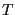

Next: Main Program: Monte Carlo Up: Case Study 1: The Previous: Main Program: Initial Outputs
r by setting the seed value using Seed. Then the number of spins init() function, and finally we convert  to since multiplication is more efficient than division.
/* Seed the random number generator */ gsl_rng_set(r,Seed); /* Compute the number of spins */ N=L*L; /* Allocate memory for the system */ M=(int**)malloc(L*sizeof(int*)); for (i=0;i<L;i++) M[i]=(int*)malloc(L*sizeof(int)); /* Generate an initial state */ init(M,L,r); /* For computational efficiency, convert T to reciprocal T */ T=1.0/T;